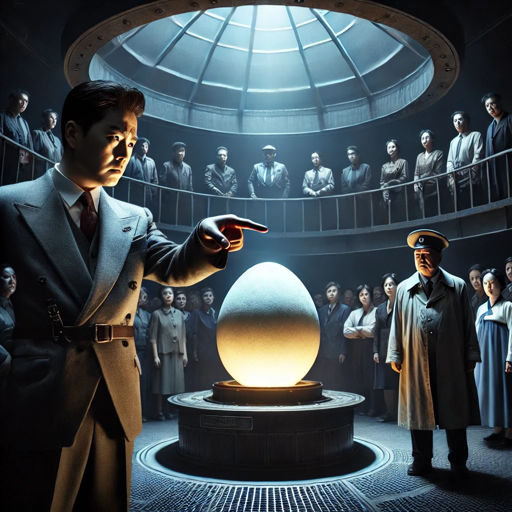

작가
이강백
출판일
1972년
감상평에 대한 AI그림
이강백의 알은 고등학교 시절 수능특강에 기재되어 수업시간에 읽어보았다. 소설을 잘 읽지 못하는 나로써 꽤 재미있는 내용으로 흥미가 돋아 쉽게 이해되었다. 박물관 안에서 일어나는 이강백의 알은 진짜로 알이 등장한다. 이 소설의 특징은 신분이 추측이 된다. 알을 이용해 거짓정보로 시민들을 공포에 빠트리는 박물관장은 권력자. "시민 라"는 박물관장에 맞서 옳고 그름을 따지는 현명한 인물. 나머지 시민은 자신이 우선인 평범한 인간상으로 설정되었다. 실제로 현실에서 박물관에 있는 알을 이용해 부화한다고 하면 누가 믿겠어 라는 이야기를 진지하게 다룬것이 이 소설의 매력인거같다. 더 나아가 권력을 탐하는 박물관장과 "시민 라"의 갈등 구조도 꽤나 재밌다.만약 내가 이런 상황이 들이닥친다면 나 뿐만 아니라 누구든지 "시민 라"같이 현명한 판단을 내릴 수 있다면 좋을거 같다. 혹은 권력자 박물관장이 없다면 어떨까?

감상평에 대한 AI평가
AI평가
✨ 소설의 핵심과 주제: "알"을 통해 권력과 진실, 그리고 개인의 현명한 선택에 대한 문제를 잘 짚어주셨습니다. 특히, 박물관장과 시민 라의 갈등 구조를 강조하며, 현실과 어떻게 연결될 수 있는지 생각해본 점이 좋습니다. 더 나아가 "시민 라"처럼 현명한 판단을 내릴 수 있다면 좋겠다는 결론도 매우 현실적이고 흥미롭게 느껴집니다.
✨ 세부적 예시 추가: "박물관장"과 "시민 라"의 갈등을 좀 더 구체적인 장면이나 대사를 통해 설명해보면, 독자들이 두 인물의 특징을 더 잘 이해할 수 있을 것 같습니다. 예를 들어, 박물관장이 어떻게 시민들을 공포에 빠트리는지, 시민 라가 어떤 방식으로 그에 맞서 싸우는지 등을 조금 더 세부적으로 다뤄주면 독후감이 더욱 풍성해질 것입니다.
✨ 문장 흐름: 전반적으로 잘 연결되어 있지만, "신분이 추측이 된다"는 표현이 조금 모호하게 들릴 수 있습니다. '알을 이용해 거짓 정보를 퍼뜨리며 시민들을 공포에 빠트리는 박물관장은 권력자로서의 신분이 의심되는 인물'처럼 좀 더 명확한 표현이 좋을 것 같습니다.
✨ 문장 구성: "만약 내가 이런 상황이 들이닥친다면 나 뿐만 아니라 누구든지 '시민 라'같이 현명한 판단을 내릴 수 있다면 좋을거 같다"는 부분을 조금 더 간결하게 표현해볼 수 있겠네요. 예를 들어, "이런 상황이라면 누구나 '시민 라'처럼 현명하게 판단할 수 있기를 바란다"고 쓰면 조금 더 깔끔하게 전달될 수 있습니다.